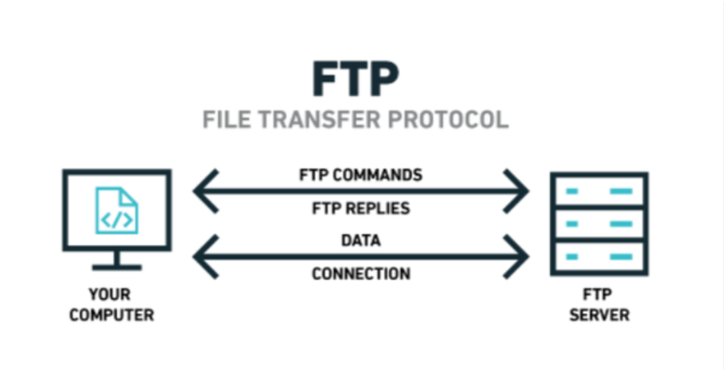

File Transfer Protocol (FTP) is a standard network protocol used to transfer files between a client and a server over a TCP/IP network. It was one of the earliest Internet protocols, developed in the 1970s, and has long been used for uploading files to web servers, distributing software, and backing up data remotely.
FTP operates on a client-server model using two separate channels: a command channel (port 21) for sending instructions and a data channel (port 20 or a passive port) for transferring file contents. Standard FTP transmits data in plaintext, making it insecure. Secure variants — FTPS (FTP Secure, adding TLS) and SFTP (SSH File Transfer Protocol) — address this by encrypting the connection. FTP clients include FileZilla, WinSCP, and command-line tools.
Key features of File Transfer Protocol include: